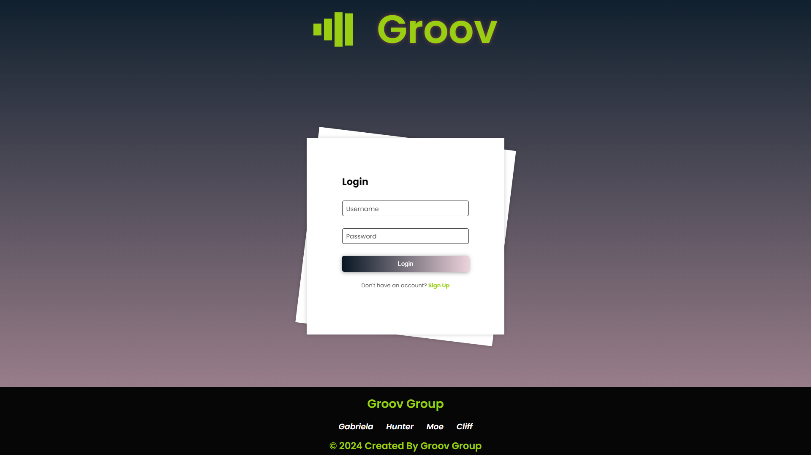
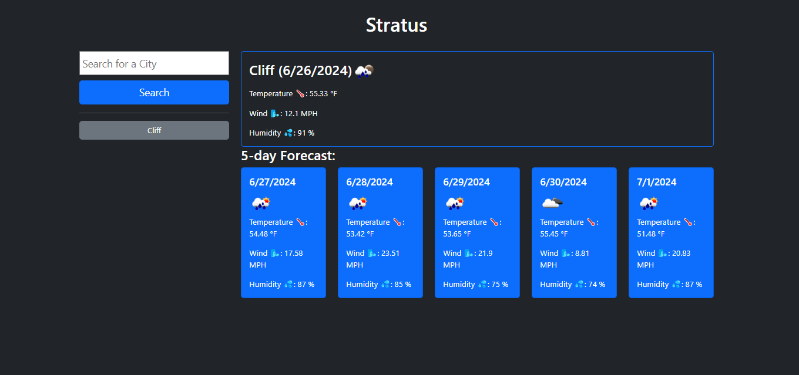

Welcome to Cliftons's Programming Portfolio
About Me

Clifton Reed is an ambitious and dynamic professional with a proven track record in team leadership, customer service excellence, and technical expertise. Based in Santa Barbara, CA, Clifton brings a wealth of experience from diverse roles and industries, underscoring his versatility and commitment to excellence.
Currently, Clifton is expanding his horizons in the tech field, having recently completed an 18-week intensive Full-Stack Coding program from UC Berkeley Extension. This rigorous training has equipped him with robust skills in building both front-end and back-end applications, proficiently utilizing JavaScript, SQL, HTML, CSS, and Java. He has hands-on experience with platforms and tools like PGAdmin4, GitHub, GitBash, MongoDB, Insomnia, and Express.js, enabling him to create dynamic and scalable web solutions.
Before transitioning into tech, Clifton held various roles that honed his leadership and operational skills. As a Front Office Supervisor at Ridley Tree Cancer Center, he effectively managed administrative tasks, patient interactions, and team coordination in a high-pressure environment. His exceptional customer service skills were consistently recognized, earning him multiple nominations for Best in Customer Service and the WECARE Champion accolade at Sansum Clinic.
Clifton's diverse work history includes roles as a rideshare driver, laborer, catering kitchen prep, and lead wait staff supervisor. Each position has contributed to his adaptability, strong work ethic, and ability to thrive in fast-paced, multifaceted environments. His military background further underscores his discipline, reliability, and commitment to teamwork.
Clifton's career is characterized by his passion for efficiency, process improvement, and collaborative success. He is a fast learner who brings curiosity and enthusiasm to every project, making him a valuable asset in any team setting. With his technical acumen and customer-centric approach, Clifton is poised to make significant contributions to any organization he joins.
Projects
Gifs & Giggles

Gifs & Giggles is a webapp that allows users to choose a genre of jokes and gifs to be displayed. The user can choose to display a different gif by selecting the corresponding button below the Gif. The modal allows the user to choose between pun, christmas, programming, spooky, and misc.
Groov
Groov is a user-friendly tool designed to streamline the creation of playlists, music information search, and music sharing. Whether you're an avid music enthusiast or a casual listener, Groov provides a convenient platform to curate your music experience.
Coues
Take a quiz and discover your wild side! This web app is a quiz that will assign you an animal: Bear, Jaguar, Eagle, Dolphin, Sloth, and Cody the Corgi. (Cody is a homage to our Sensei). Answer the twelve questions and discover your animal. Have fun!
Stratus
Stratus is a weather dashboard that runs in the browser and features dynamically updated HTML and CSS. Use the 5 Day Weather Forecast from "OpenWeatherMap" to retrieve weather data for cities.